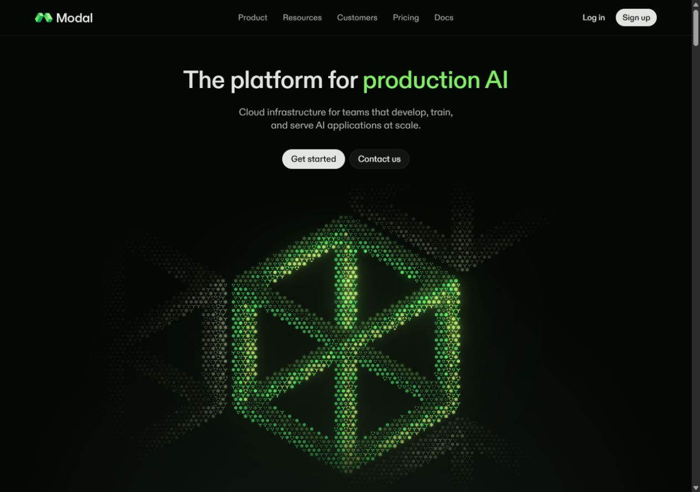

Modal’s hero, reconstructed.
A captured reference beside a live implementation. Compare the composition, then try the field.
Modal Captured state · Box
Visit original ↗
Reconstruction Live rendering
Full size ↗Move the pointer to tilt and light the form; click the field to advance.
What matches, and what is approximate
Measured from Modal. Desktop spacing, headline, navigation, button sizes, background and accent colors follow the reference at the same viewport. Modal’s logo is included only to make this reference study comparable.
Independently implemented. The WebGL glyph field reconstructs an open box, separated layers, stairs and small cubes with sixteen symbol variants. Pointer movement tilts and lights the scene; clicking advances the form. It is a reconstruction, not Modal’s original Three.js shader. Shapes and timing differ; Arial replaces the proprietary ABC Diatype font.
How to compare. Both panes use the same 1,280 × 900 desktop viewport in this view; the reference capture is scaled to fit. The left pane combines a shared captured header with static field captures from November 3, 2026; it is not a recording. The right runs locally in your browser with independently authored transitions. Open the original to compare its motion directly.
Reference study only. Modal’s name, logo and copy belong to Modal. This playground is independent and is not affiliated with Modal. Source links lead to Modal itself. The measurements and CSS motion tokens were extracted using DesignLang 13.3.2. The canvas geometry and its timing were reconstructed separately. No Lovable account, credits, or paid generation service are needed.